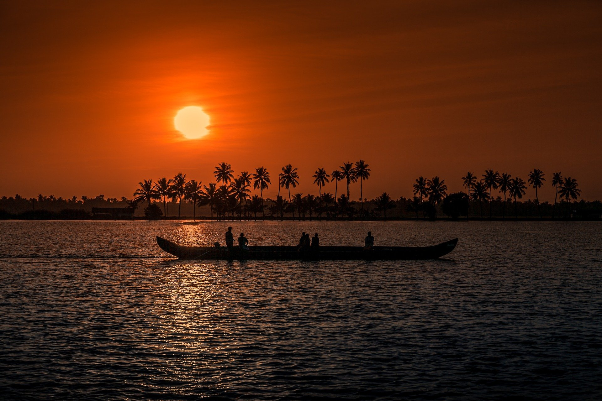

Kerala's beaches, backwaters, lakes, mountain ranges, waterfalls, ancient ports, palaces, religious institutions and wildlife sanctuaries are major attractions for both domestic and international tourists. The city of Kochi ranks first in the total number of international and domestic tourists in Kerala.
Kerala is known for its ecotourism initiatives which include mountaineering, trekking and bird-watching programmes in the Western Ghats as the major activities.

The state's only drive-in beach, Muzhappilangad in Kannur, which stretches across five kilometres of sand, was chosen by the BBC as one of the top six drive-in beaches.
Idukki Dam, the world's second arch dam, and Asia's first is at Idukki. The major beaches are at Kovalam, Varkala, Kozhikode, Fort Kochi, Cherai, Alappuzha, Ponnani, Kadalundi, Tanur, Chaliyam, Payyambalam, Kappad, Muzhappilangad and Bekal. Popular hill stations are at Ponmudi, Wayanad, Wagamon, Munnar, Peermade, Ramakkalmedu, Arimbra, Paithalmala of Kannur district, Kodikuthimala, and Nelliampathi. Munnar is 4,500 feet above sea level and is known for tea plantations, and a variety of flora and fauna.
The state's only drive-in beach, Muzhappilangad in Kannur, which stretches across five kilometres of sand, was chosen by the BBC as one of the top six drive-in beaches.
Idukki Dam, the world's second arch dam, and Asia's first is at Idukki. The major beaches are at Kovalam, Varkala, Kozhikode, Fort Kochi, Cherai, Alappuzha, Ponnani, Kadalundi, Tanur, Chaliyam, Payyambalam, Kappad, Muzhappilangad and Bekal. Popular hill stations are at Ponmudi, Wayanad, Wagamon, Munnar, Peermade, Ramakkalmedu, Arimbra, Paithalmala of Kannur district, Kodikuthimala, and Nelliampathi. Munnar is 4,500 feet above sea level and is known for tea plantations, and a variety of flora and fauna.